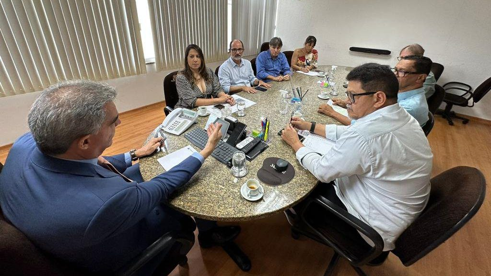

{kind=link}

Anac limita operações em aeroporto de Porto Seguro e autoridades buscam solução
Portaria da Anac gerou preocupações sobre potenciais prejuízos aos passageiros e à equipe da
aviação civil no aeroporto do município
Por Radar News 15 de setembro de 2023

Cláudia Oliveira intermediou uma reunião em busca de solução para limitação de voos
Em resposta à recente Portaria n° 12.228/2023 da Agência Nacional de Aviação Civil
(Anac),
que limita as operações no Aeroporto Internacional de Porto Seguro, a deputada
estadual CláudiaOliveira (PSD) iniciou esforços para solucionar o problema. A medida
gerou preocupações sobre potenciais prejuízos aos passageiros e à equipe da aviação civil
no terminal.
Representando a região da Costa do Descobrimento, a deputada organizou uma reunião
com diversas autoridades para abordar a situação.
Estiveram presentes o secretário de Infraestrutura da Bahia, Sérgio Brito; Henrique
Pedreira e Felipe Santos, executivos do Grupo Sinart, responsável pela administração do
aeroporto; Ubaldo Brito, diretor de terminais da Secretaria de Infraestrutura da Bahia
(Seinfra); Carlos Hulsmann, coordenador de terminais da Agência Estadual de Regulação
de Serviços Públicos de Energia, Transportes e Comunicações da Bahia (AGERBA); e Eurico
Isaque, diretor de qualidades da AGERBA.
Anac limita operações em aeroporto de Porto Seguro e autoridades buscam solução
Segundo a deputada, o governador Jerônimo Rodrigues e o secretário Sérgio Brito estão
comprometidos em resolver essa questão o mais rápido possível, devido à “importância
crítica” do Aeroporto Internacional de Porto Seguro, um dos destinos mais visitados do
Brasil.
WhatsApp do RADAR: (73) 98844-0216.
Adicione nosso número e envie vídeo, foto ou apenas o seu relato. Sua sugestão será
apurada por um repórter. Participe!